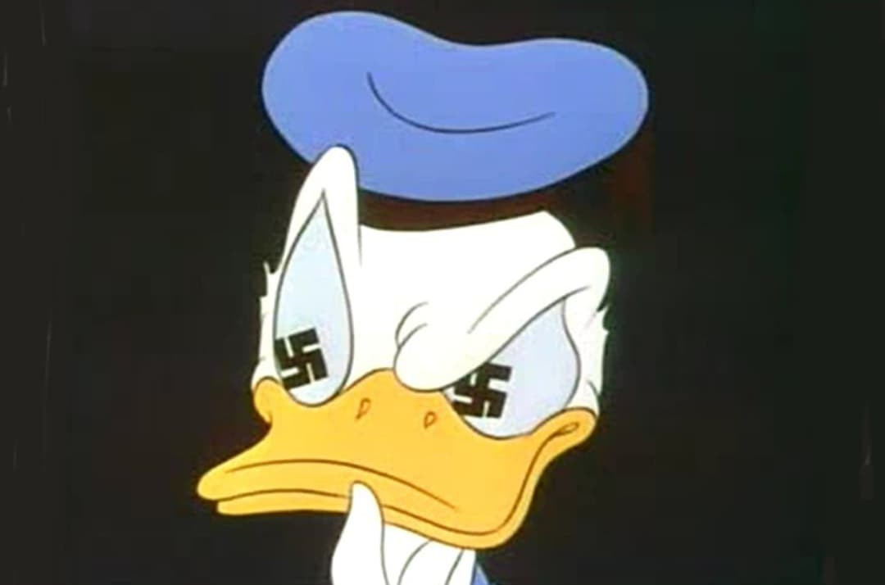
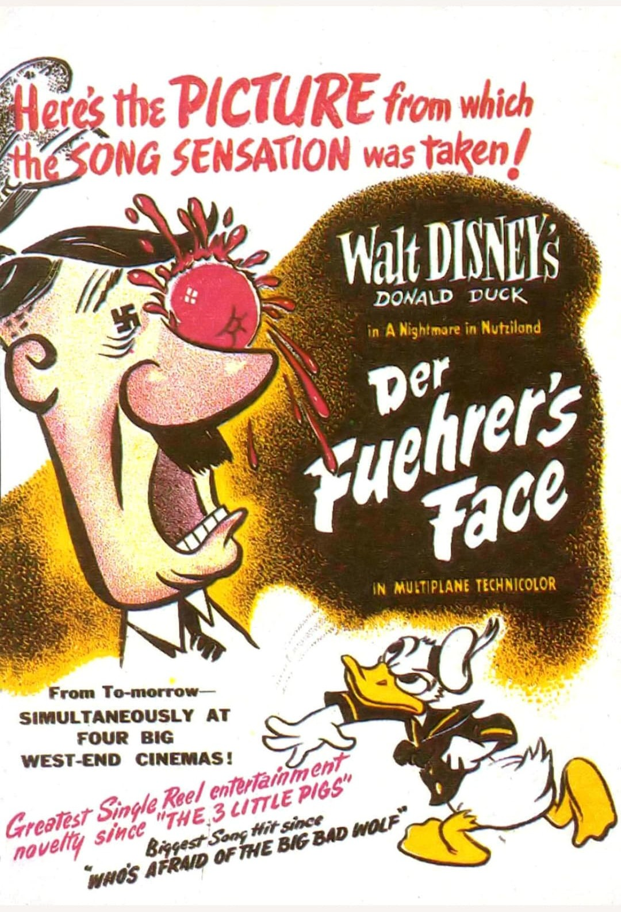
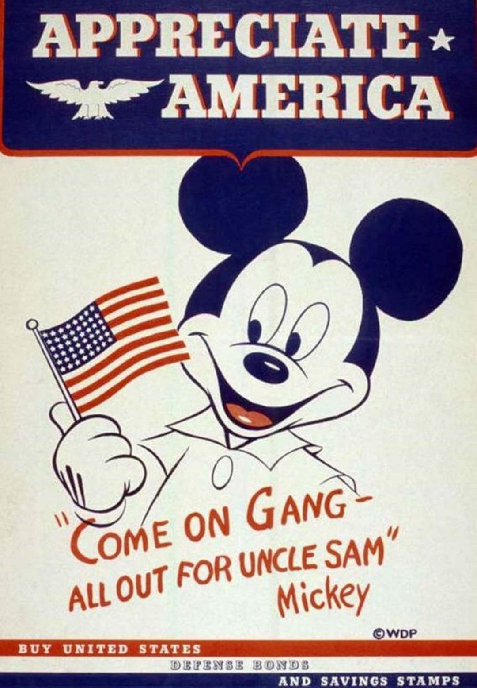
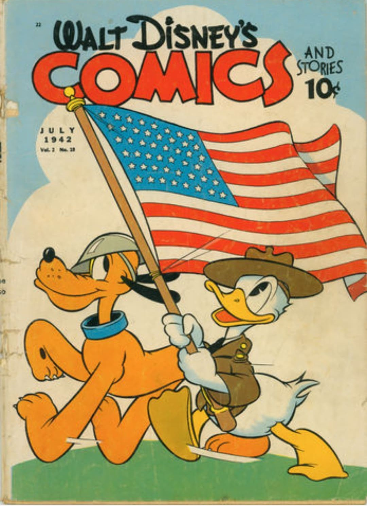

Cette fiche présente l’utilisation de l’animation par les studios Disney durant la Seconde Guerre mondiale. Les informations ci‑dessous sont exposées dans un cadre strictement historique et documentaire, conformément aux exigences muséales de neutralité et de contextualisation.
Entre 1942 et 1945, Disney participe à l’effort de guerre américain en produisant des films éducatifs, satiriques et patriotiques. Ces œuvres visent à soutenir la mobilisation nationale, encourager l’achat de bons de défense, dénoncer les régimes totalitaires et renforcer la cohésion du public américain. L’animation devient alors un outil de communication politique, mêlant humour, pédagogie et propagande.

Interdit aux enfants.
Présenté uniquement à des fins historiques.
Court-métrage produit par Disney pour encourager les citoyens américains à gérer leurs finances de manière responsable afin de soutenir l’effort de guerre. Donald Duck y incarne le citoyen modèle face à la tentation de gaspiller son argent.
▶ Spirit of ’43 – Dessin animé historique
Ce court-métrage met en scène Donald Duck plongé dans un univers nazi caricatural. Le film dénonce l’absurdité du totalitarisme à travers une satire agressive du régime hitlérien. Il devient l’un des outils de propagande les plus marquants produits par Disney.

Les affiches de Mickey Mouse encouragent les citoyens américains à acheter des Defense Bonds. Ces obligations financières permettent de soutenir l’effort de guerre. Disney devient un relais visuel majeur pour la mobilisation économique du pays.

Les publications comme Walt Disney’s Comics and Stories montrent Donald en uniforme, drapeau américain en main. Ces représentations renforcent l’idée d’un engagement total de la nation, jusque dans la culture populaire.
L’iconographie nazie est volontairement exagérée : drapeaux, slogans, symboles omniprésents. Disney utilise la caricature pour dénoncer l’endoctrinement et ridiculiser la propagande du régime nazi. L’humour devient une arme psychologique.
Plusieurs courts-métrages sont produits pour soutenir l’effort de guerre :
L’animation permet de transmettre des messages politiques de manière accessible et mémorable. Disney joue un rôle essentiel dans la communication visuelle américaine, mêlant humour, patriotisme et dénonciation des régimes totalitaires.